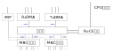

综述¶
鲲鹏920片内提供100GE的网络子系统，这个子系统只提供整个网络的数字部分，要真正使 用起来，需要外部再接上模拟部分的部件。
下面是鲲鹏920接上电口的实物图：
todo：需要一张电口的实物图
而这张是光口的实物图：
todo：光口的图，配套光头的样子
网络子系统在整个芯片中的位置如下：
todo：给一张芯片中网络子系统的位置示意图。
其内部结构可以用如下图示意：

todo: 这个示意需要细化多种不同的配置是如何实现的原理介绍，还需要确定一下片上有 多少Buffer，可以撑住多长实现的数据冲击。
100GE网络是个很大的设计台阶，这个带宽规模意味这每秒这个这个接口可以收到超过 12GB的数据，何况每个设备也不止包含一个接口。网络接口的带宽常常是数据中心处理器 一个很重要的控制要素，因为它决定了业务进入计算子系统的速度，这响应也控制了计算 子系统的规模。如果业务带宽很高，但计算子系统计算能力不足，多余的带宽就是浪费的 。相应地，如果计算子系统很强大，但网络带宽不足，计算子系统的功能就变成了浪费了 。
鲲鹏920HNS（Hisilicon Network Subsystem，或者称为HNS3，因为这是鲲鹏HNS的第三代 ）提供了两个分流业务压力的设计，其中一种手段是在底层提供的交换机，这个设计最初 来自华为5G基站的需求，对于非本节点的数据，配置转发表，部分数据可以不用进入计算 子系统，甚至可以不需要进入内存，直接转发到其他节点上。这对于专用设备降低压力会 有帮助。
通用服务器一般用专用的路由器或者交换机进行数据交换，这种情况下，数据会全部进入 内存，供计算子系统处理。但为了把计算压力分布到不同的CPU上，网卡可以以队列为单 位，通知不同的CPU进行处理。为此，设计者还需要保证所使用的内存总是靠近消耗这些 内存的计算单元。我们在后面讨论具体的数据流的时候再重新来看这个问题。